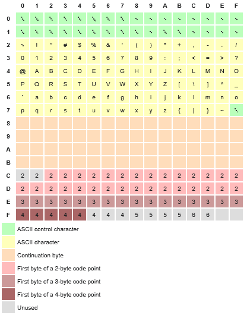
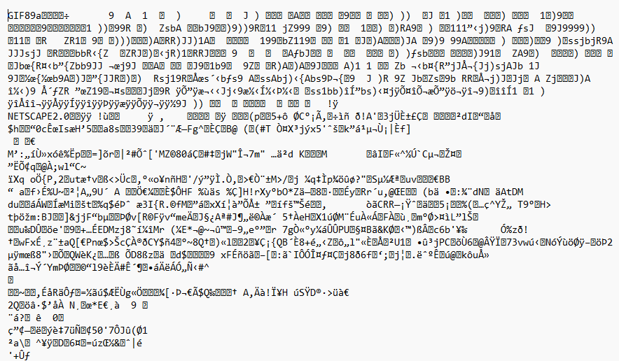

Representing Files on a Computer
In order for your computer to represent raw data in any form, it has to use certain software. Software contains a set of instructions that a computer can use to open, edit, and/or save files. A file formats acts like a contract: it defines how the data is organized in storage so that the compatible software can understand and work with it. In this section, we're going to go over how computers store data in binary, and how that binary data can be translated into other forms such as hexadecimals or represented graphically using ASCII or UTF-8. But first, let's quickly go over what we're talking about when we we're talking about storing and accessing data.
Storage
We're using the term "computer" in this lesson to refer to many types of modern devices such as laptops, PCs, phones, tablets, server towers, and the like. To simplify (a lot), computers save data using bits, which are commonly represented as a series of 1s and 0s. This shorthand is used to refer to physical states inside of the primary data storage, though the way those bits are physically stored depends on the type of device. This can range from using the North/South orientation of magnetic dipoles in hard disk drives (HDDs) and magnetic tapes (such as VHS and cassettes), the charged/uncharged state of transistors and capacitors in solid state drives (SSDs) or memory cards, or pits and lands on optical disks (such as CDs, DVDs, and Blu-Ray). Each of these physical bits is also assigned a numerical bit address. The read/write component uses these addresses to locate specific bits, check their state, or change them.
Regardless of the physical medium, whether it's magnetic, electronic, or optical, data storage ultimately comes down to maintaining and detecting two distinct binary states. Something or nothing, charged or uncharged, north or south. The read/write component interprets those states and delivers the information to other parts of the computer.
Computer Language and Number Systems
Now that we have a rudimentary understanding of how binary data is stored, we should ask: how can such simple binary states represent so much complexity?
The human computer scene in Netflix's The Three-Body Problem offers a useful visualization of this. In the scene, each soldier acts as a single bit, holding a two sided sign where the white side represents a 0 and the black side represents a 1. Their individual states are simple, but together they form a functioning computer by reacting to their neighbors and following simple rules.
If this video isn't working for you, you may have to open it in another page. Click here to open the video on YouTube.
In this scene, the different segments of soldiers can be thought of as comprising different components of a computer.
In the book by Cixin Liu, the orders that the flag-holding soldiers receive are described in terms of logic gates (AND, OR, NOT, etc):
Newton took out six small flags: three white, three black. Von Neumann handed them out to the three soldiers so that each held a black flag and a white flag. "White represents 0; black represents 1. Good. Now, listen to me. Output, you turn around and look at Input 1 and Input 2. If they both raise black flags, you raise a black flag as well. Under all other circumstances, you raise the white flag."
Thus forming an AND gate, where both Inputs 1 AND Input 2 must raise a black flag for output to do the same. (If you're interested in learning more about boolean logic and logic gates, this episode of CrashCourse is a great starting point.) When these gates are arranged in specific sequences, more complex operations such as arithmetic, data storage, and anything else that you can do on a computer can be performed. It's in this way that anything that can represent two binary states can act as different components of a computer.
Von Neumann pointed to the gigantic human circuit below the pyramid and began to explain, "Your Imperial Majesty, we have named the computer Qin I. Look, there in the center is the CPU, the core computing component, formed from your five best divisions. [...] Observe also the open passage that runs through the entire formation, and the light cavalry waiting for orders in that passage: That's the system bus, responsible for transmitting information between the components of the whole system.
While humans flipping signs definitely isn't the most efficient method of computation, it does demonstrate how the fundamentals of computing can be structured to deliver complex information.
Counting in Binary
As a side effect of finding ourselves with 10 fingers (usually), humans have developed a base 10, or decimal, numerical system. In base 10, the number "3125.0" can be thought of as:
Each new digit to the left of the decimal point represents an additional \(10^n\), where \(n\) is the digit's index, starting from 0, while each digit to the right of the decimal point represents an additional \(10^{-n}\). So 3125.0 has a 3 in the "thousand" or \(10^3\) place, a 1 in the "hundred" or \(10^2\) place, a 2 in the "ten" or \(10^1\) place, a 5 in the "one" or \(10^0\) place, and a 0 in the tenth or \(10^{-1}\) place.
Binary works the same way, but with powers of 2 instead of 10.

GIF from https://blog.adafruit.com/2018/09/10/analog-binary-counter-visually-demonstrates-0-to-63-in-base-10-video/
When you type a character in a .txt document, your device interprets that as a signal that is then converted into a sequence of bits. For example, the character a becomes the binary 01100001.
Each character that can be typed can also be represented in a single byte (8 bits). This means that one 8-bit byte can represent any value from 00000000 to 11111111 (0 to 255 in decimal).
So, 01100001 in binary can be represented like:
Or 97 in decimal form.
Counting in Hexadecimal
Hexadecimal numbers (base 16) are often used as a compact way to represent binary values. The numbers 0-9 are represented by their familiar decimal symbols, while the letters A-F are used to represent numbers up to 15 (A=10, B=11, ..., F=15). As \(16=2^4\), each hexadecimal digit can be used to represent half a byte (the technical term is a "nibble". Yes, really.). So one byte can be expressed using only two characters in hexadecimal. This makes the hexadecimal counting system much more compact in its ability to represent data. In this way, a can be represented in hex form as 61.
\((6 \cdot 16^1) + (1 \cdot 16^0)\) = 97 (decimal) = 01100001 (binary)
To summarize: when you type a character, a series of 8 bits are flipped somewhere in your systems memory to represent a number between 0 and 255. Programs can then use software to translate these values into something meaningful.
So, how does your computer take a large number saved in memory and turn it into a document you can understand? How do text editors know to open a .txt file and represent the series of bits 01100001 as the letter a?
Endianness
One of the first things a program may need to check when reading binary data is its endianness, or the order in which bytes of a given word (a fixed number of bytes set by the computer's processor) are to be read. There are two types:
- Big-endian (BE): The most significant byte (the one with the highest value place) comes first.
- Little-endian (LE): The least significant byte (the one with the lowest value place) comes first.
Suppose a word is four bytes, and you want to write the number 2024:
| Endianness | Byte Order (hex) |
|---|---|
| Big-endian | 00 00 07 E8 |
| Little-endian | E8 07 00 00 |
If a file is saved using one endianness but opened using another, the bytes will be misinterpreted. Think of it as similar to trying to read a manga from left to right, or a novel starting from the last page. Many file formats include a byte order mark (BOM) to indicate which endianness to use.
Opening a file with a text editor
Plain text editors convert binary data into legible characters using encodings such as UTF-8 or ASCII. UTF-8 is the most widely used encoding and is backwards compatible with ASCII for the first 128 characters.
The following table shows how each byte value maps to a character in UTF-8:
 UTF-8 Byte Map, from Wikipedia
In this table, the row selects the first hex character of a byte and the column selects the second. For example, the letter a (hex 61) is found at row 6, column 1.
This table helps explain why some bytes in a binary file appear as readable characters when opened in a text editor.
Text editors work well for text files, but what happens if you open file that a text editor wasn't designed for, like a GIF? Let's test it out by using this GIF file from Wikipedia:

Rotating_earth_(large).gif, from Wikipedia
Text editor setup
Which text editor to use depends on your operating system:
- Windows: Notepad
- macOS: TextEdit
- Ubuntu/Linux: Gedit (others: Kate, Kwrite, Geany, etc.)
You can usually right-click (or command-click on macOS) a file and select "Open With" to choose your text editor. If you need to use the terminal, search for instructions specific to your OS and editor (e.g., "How to open a file in Notepad using Command Prompt").
Now, open the GIF file in your text editor. The result should appear as a jumble of seemingly nonsensical characters, such as:

Notice that among the symbols, some readable text appears—such as "GIF" at the start (the file signature) and "NETSCAPE2.0" further down. These are parts of the file format specification that are stored as plain text within the binary data. Some of the binary content is mapped to readable characters because it corresponds to standard ASCII values, while the rest appears garbled or empty because it's either non-text data or outside the displayable character range.
A program designed to open a GIF file uses all of these bytes to determine properties like image width, height, frame count, and pixel colors.
While tools like Kaitai and Construct don't display the animation directly, they allow you to parse and interpret the raw data, making it possible to extract and use this information in your own programs.
Continue to Kaitai basics to start describing file formats declaratively.